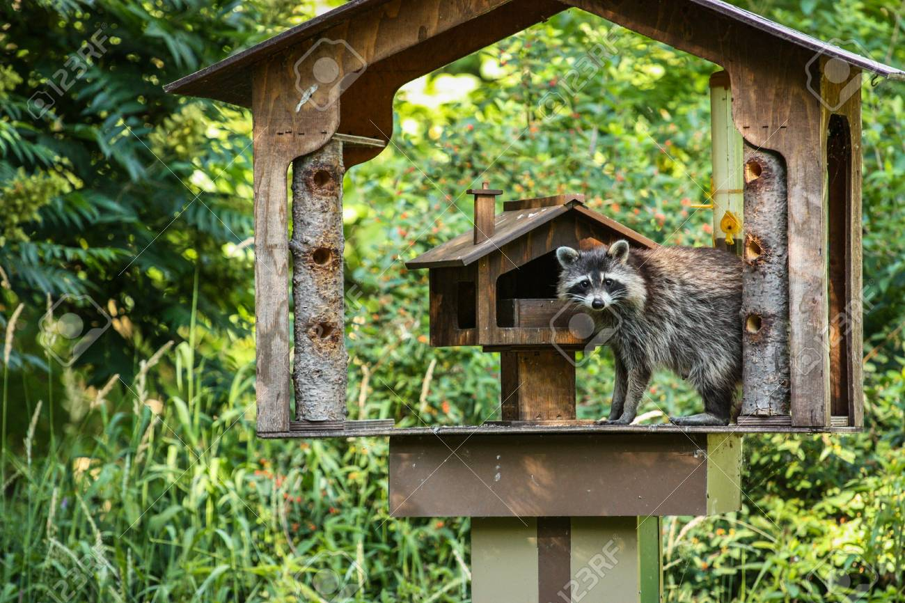
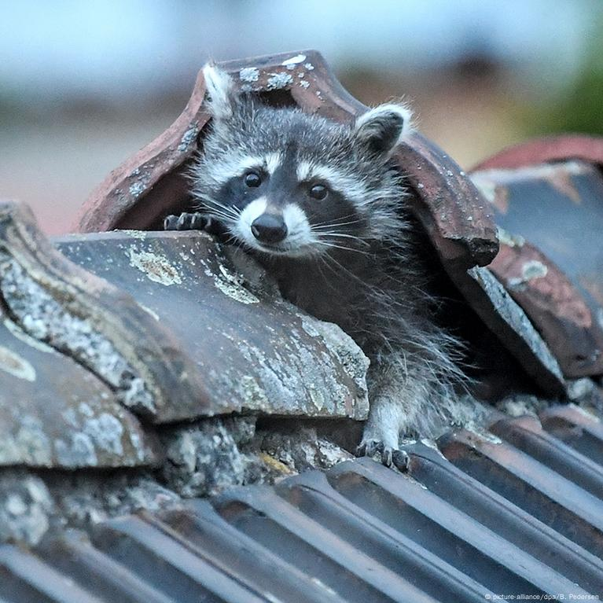
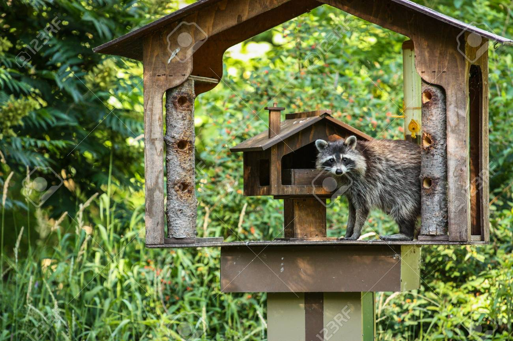
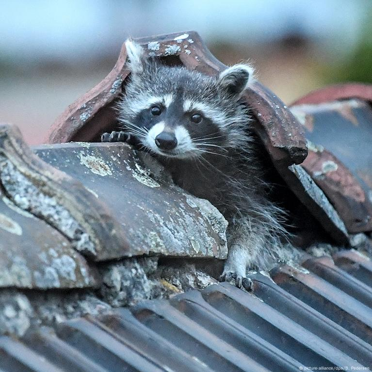
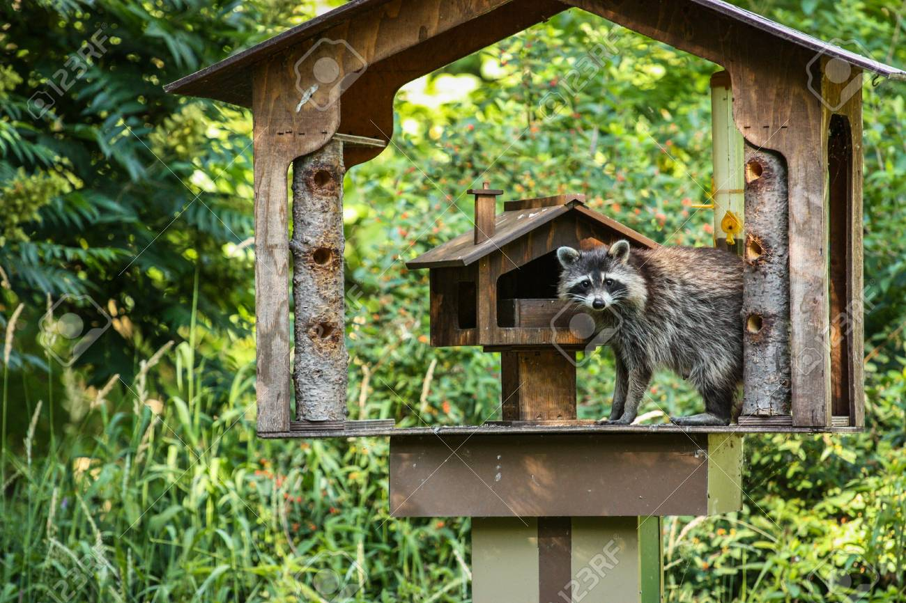
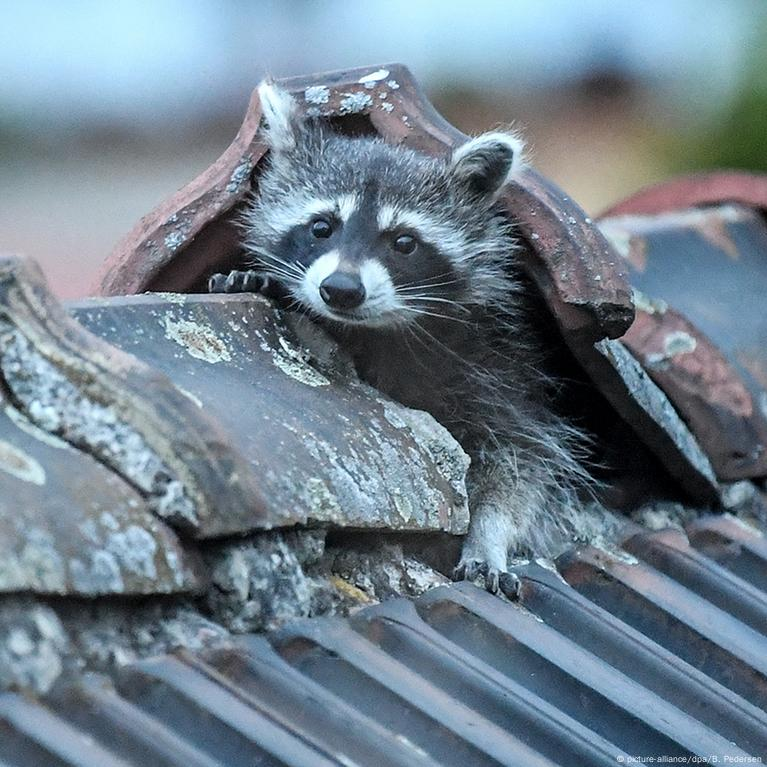
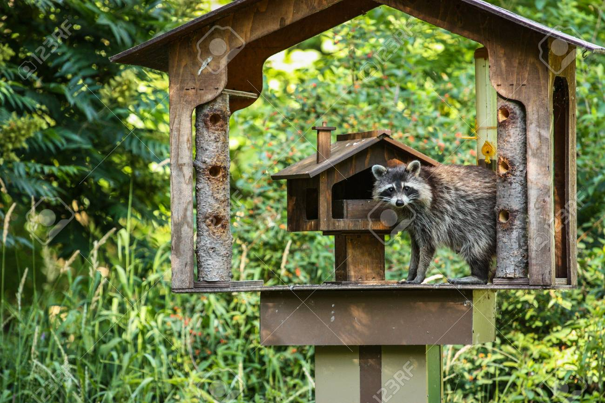
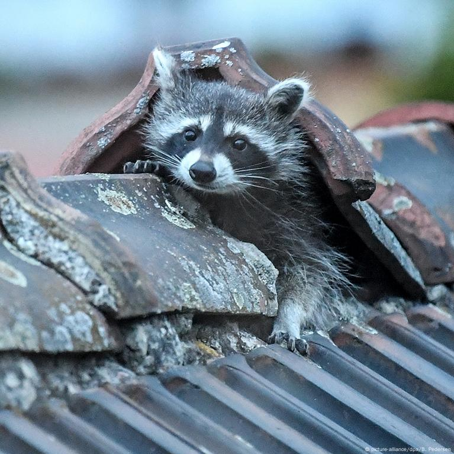
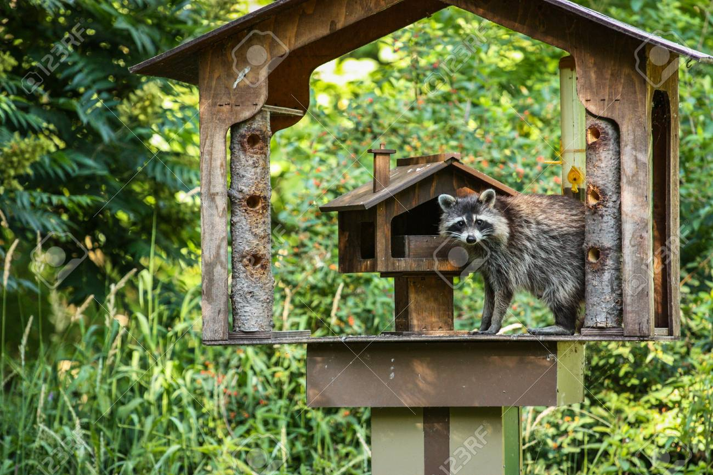
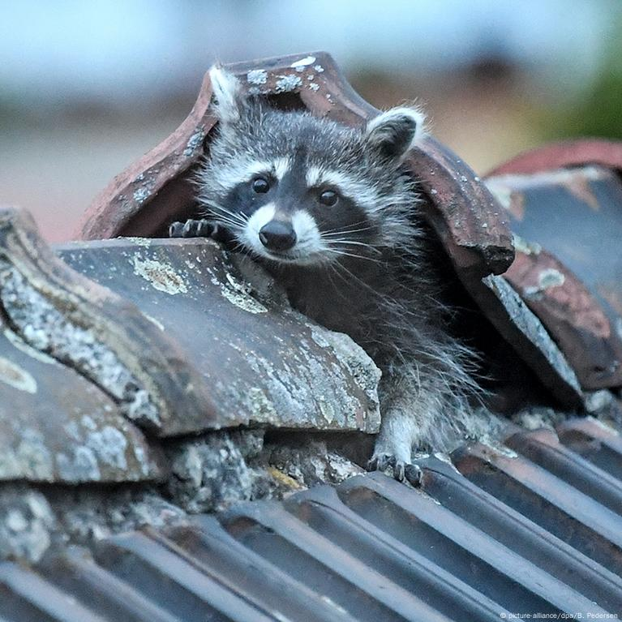

Galería de Imágenes: Mapaches
Explora la belleza y singularidad de estos fascinantes animales.
Inicio
Hábitat y ubicación geográfica
Hábitos alimenticios y reproductivos
Estado de conservación
Contacto
 


 




 


